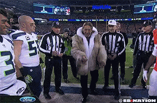

How often does the best team win?

Michael J. Lopez, Gregory J. Matthews, Benjamin S. Baumer http://bit.ly/2gHCI0C Fields Institute, May 25, 2018
You might remember this…

You probably remember this…

Using statistics to assess luck in sports
- The best team does not always win.
- How often does the best team win in each sport?
- How to untangle luck from skill?
What parity looks like

What parity does not look like

Parity checklist
- Equality at a fixed time
- Postseason tournament
- Within season equality
- Between season equality
Prior work

Challenges
- Problem 1: wins and losses alone insufficient (noisy)
- Problem 2: point differential non-generalizable
- Solution: if you can’t beat ’em, use their numbers in a statistical model

The model: definitions
- \(p_{(q,s,k)ij} =\) probability that team \(i\) will beat team \(j\) in season \(s\) during week \(k\) of sports league \(q\), for \(q \in \{MLB, NBA, NFL, NHL\}\).
- \(\alpha_{q_{0}}\) be the league-wide home advantage (HA) in \(q\)
- \(\alpha_{(q) i^{\star}}\) be the extra effect (+ or -) for team \(i\) when playing at home
- \(\theta_{(q,s,k) i}\) and \(\theta_{(q, s, k) j}\) be season-week team strength parameters
The model & assumptions
\[ E[\text{logit}(p_{(q,s,k) ij})] = \theta_{(q,s,k) i} - \theta_{(q, s, k) j} + \alpha_{q_0} + \alpha_{(q) i^{\star}} \]
Assumptions:
- \(\sum_{i=1}^{t_{q}} \theta_{(q,s,k)i} = 0\)
- \(E[\theta_{(i,q,s+1,1)}] = \gamma_{q, season} \theta_{(i, q,s,k)}\)
- \(E[\theta_{(i,q,s,k+1)}] = \gamma_{q, week} \theta_{(i, q,s,k)}\)
- \(\gamma_{q,week}\) and \(\gamma_{q,season}\) week/season level autogressive parameters
Fitting a cross-sport model
- Data
- 2006–2016 reg. season in MLB, NBA, NFL, NHL (Sports Insights)
- Priors
- Uniform (variance parameters) and Normal (team strength parameters)
- Software
rjags package in R statistical software
- Draws
- 20k iterations, 2k burn in, thin of 5
Â

Â

Unpredictability at a fixed point in time
How often does the best team win?

GMs need to predict the future

- Buyers or sellers at trade deadline?
- Our team strengths are better at predicting future W-L
GMs need to strategize
- Patriots rest starters in 2015 against Dolphins
- Lost HFA, lost in Denver
- Home advantage matters in 🈠and 🏀

GMs need a longe-term plan
“They have to rethink their whole philosophy”
Mike Milbury on the 2016 Washington Capitals losing to Pittsburgh
- There’s an immense amount of luck involved in hockey. Rethinking your philosophy on a postseason series is ludicrous
Acknowledgements: Greg & Mike
Parity in sports
More info:
Summary:
- Unpredictability at a fixed time: 🏑, ⚾
- Within season unpredictability: 🏈, 🏀
- Between season unpredictability: 🏑
- Largest home advantage: 🏀